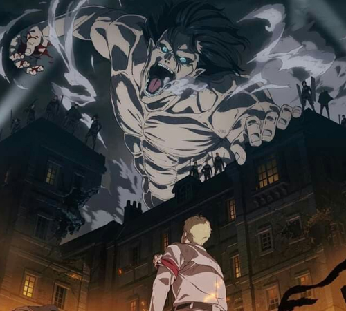
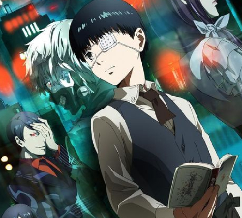
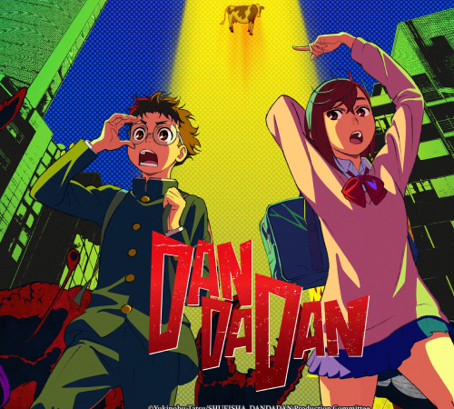
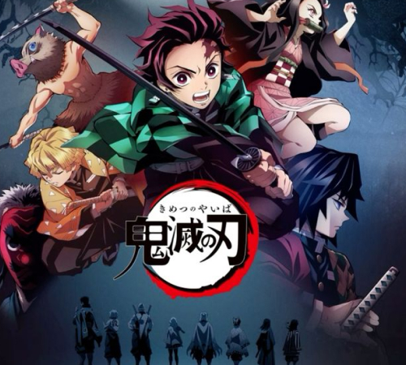

RE:ZERO
Re:Zero − Starting Life in Another World (Japanese: Re:ゼロから始める異世界生活, Hepburn: Re:Zero kara Hajimeru Isekai Seikatsu), often referred to simply as Re:Zero and also known as Re: Life in a different world from zero,[d] is a Japanese light novel series written by Tappei Nagatsuki and illustrated by Shin'ichirō Ōtsuka.

ATTACK ON TITAN
Attack on Titan (Japanese: 進撃の巨人, Hepburn: Shingeki no Kyojin, lit. 'The Advancing Giant') is a Japanese manga series written and illustrated by Hajime Isayama. It is set in a world where humanity is forced to live in cities surrounded by three enormous walls that protect them from gigantic man-eating humanoids referred to as Titans

HUNTER X HUNTER
Hunter × Hunter (pronounced "hunter hunter"[4]) is a Japanese manga series written and illustrated by Yoshihiro Togashi. It has been serialized in Shueisha's shōnen manga magazine Weekly Shōnen Jump since March 1998, although the manga has frequently gone on extended hiatuses since 2006. Its chapters have been collected in 38 tankōbon volumes as of September 2024
MUSHOKU TENSEI
Mushoku Tensei: Jobless Reincarnation (Japanese: 無職転生 〜異世界行ったら本気だす〜, Hepburn: Mushoku Tensei: Isekai Ittara Honki Dasu, lit. "Jobless Reincarnation: If (I) go to another world, (I) will make a serious effort") is a Japanese light novel series by Rifujin na Magonote[a] and illustrated by Shirotaka.

TOKYO GHOUL
Tokyo Ghoul (Japanese: 東京喰種トーキョーグール, Hepburn: Tōkyō Gūru) is a Japanese dark fantasy manga series written and illustrated by Sui Ishida. It was serialized in Shueisha's seinen manga magazine Weekly Young Jump from September 2011 to September 2014, with its chapters collected in 14 tankōbon volumes

CYBERPUNK EDGERUNNERS
Cyberpunk: Edgerunners (Japanese: サイバーパンク エッジランナーズ, Hepburn: Saibāpanku Edjirannāzu) is a cyberpunk original net animation (ONA) miniseries based on the video game Cyberpunk 2077 by Polish studio CD Projekt Red.[2] The series was animated by Japanese animation studio Trigger
SOUSOU NO FRIEREN
Frieren: Beyond Journey's End (Japanese: 葬送のフリーレン, Hepburn: Sōsō no Furīren, lit. 'Frieren at the Funeral' or 'Frieren the Slayer')[a] is a Japanese manga series written by Kanehito Yamada [ja] and illustrated by Tsukasa Abe [ja]. It has been serialized in Shogakukan's shōnen manga magazine Weekly Shōnen Sunday since April 2020, with its chapters collected in 13 tankōbon volumes as of April 2024

DANDADAN
Dandadan (ダンダダン), also script displayed as Dan Da Dan, is a Japanese manga series written and illustrated by Yukinobu Tatsu [ja]. It has been serialized in Shueisha's Shōnen Jump+ app and website since April 2021, with its chapters collected in 17 tankōbon volumes as of November 2024.
